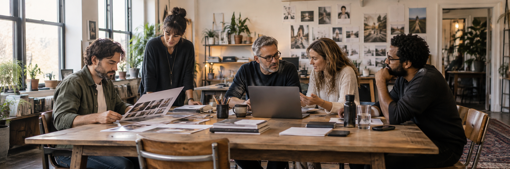

Our Process
Great work. Built together.
Plan first. Create with purpose. Keep improving.

- 01
Discover.
We learn your offer, audience, competitors, goals, and where your current experience could work harder.
- 02
Strategize.
We align the message, customer journey, channels, project priorities, and measures that matter.
- 03
Create.
Design, content, development, SEO, and campaigns come together as one consistent experience.
- 04
Launch.
We test the details, connect tracking, prepare your team, and bring the work into the world.
- 05
Improve.
We use performance insights to refine the experience, strengthen engagement, and guide the next move.